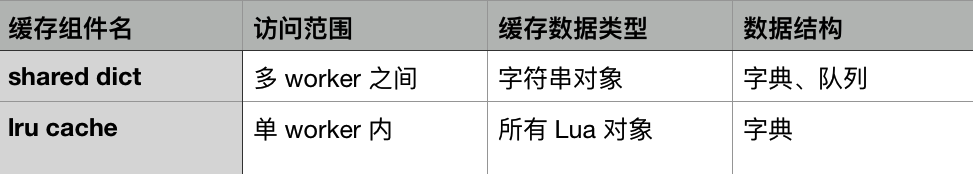

- 00 开篇词 OpenResty，为你打开高性能开发的大门.md.html
- 01 初探OpenResty的三大特性.md.html
- 02 如何写出你的“hello world”？.md.html
- 03 揪出隐藏在背后的那些子项目.md.html
- 04 如何管理第三方包？从包管理工具luarocks和opm说起.md.html
- 05 [视频]opm项目导读.md.html
- 06 OpenResty 中用到的 NGINX 知识.md.html
- 07 带你快速上手 Lua.md.html
- 08 LuaJIT分支和标准Lua有什么不同？.md.html
- 09 为什么 lua-resty-core 性能更高一些？.md.html
- 10 JIT编译器的死穴：为什么要避免使用 NYI ？.md.html
- 11 剖析Lua唯一的数据结构table和metatable特性.md.html
- 12 高手秘诀：识别Lua的独有概念和坑.md.html
- 13 [视频]实战：基于FFI实现的lua-resty-lrucache.md.html
- 14 答疑（一）：Lua 规则和 NGINX 配置文件产生冲突怎么办？.md.html
- 15 OpenResty 和别的开发平台有什么不同？.md.html
- 16 秒杀大多数开发问题的两个利器：文档和测试案例.md.html
- 17 为什么能成为更好的Web服务器？动态处理请求和响应是关键.md.html
- 18 worker间的通信法宝：最重要的数据结构之shared dict.md.html
- 19 OpenResty 的核心和精髓：cosocket.md.html
- 20 超越 Web 服务器：特权进程和定时任务.md.html
- 21 带你玩转时间、正则表达式等常用API.md.html
- 22 [视频]从一个安全漏洞说起，探寻API性能和安全的平衡.md.html
- 23 [视频]导读lua-resty-requests：优秀的lua-resty-_是如何编写的？.md.html
- 24 实战：处理四层流量，实现Memcached Server.md.html
- 25 答疑（二）：特权进程的权限到底是什么？.md.html
- 26 代码贡献者的拦路虎：test__nginx 简介.md.html
- 27 test__nginx 包罗万象的测试方法.md.html
- 28 test__nginx 还可以这样用？.md.html
- 29 最容易失准的性能测试？你需要压测工具界的“悍马”wrk.md.html
- 30 答疑（三）如何搭建测试的网络结构？.md.html
- 31 性能下降10倍的真凶：阻塞函数.md.html
- 32 让人又恨又爱的字符串操作.md.html
- 33 性能提升10倍的秘诀：必须用好 table.md.html
- 34 特别放送：OpenResty编码指南.md.html
- 35 [视频]实际项目中的性能优化：ingress-nginx中的几个PR解读.md.html
- 36 盘点OpenResty的各种调试手段.md.html
- 37 systemtap-toolkit和stapxx：如何用数据搞定“疑难杂症”？.md.html
- 38 [视频]巧用wrk和火焰图，科学定位性能瓶颈.md.html
- 39 高性能的关键：shared dict 缓存和 lru 缓存.md.html
- 40 缓存与风暴并存，谁说缓存风暴不可避免？.md.html
- 41 lua-resty-_ 封装，让你远离多级缓存之痛.md.html
- 42 如何应对突发流量：漏桶和令牌桶的概念.md.html
- 43 灵活实现动态限流限速，其实没有那么难.md.html
- 44 OpenResty 的杀手锏：动态.md.html
- 45 不得不提的能力外延：OpenResty常用的第三方库.md.html
- 46 答疑（四）：共享字典的缓存是必须的吗？.md.html
- 47 微服务API网关搭建三步曲（一）.md.html
- 48 微服务API网关搭建三步曲（二）.md.html
- 49 微服务API网关搭建三步曲（三）.md.html
- 50 答疑（五）：如何在工作中引入 OpenResty？.md.html
- 结束语 行百里者半九十.md.html
- 捐赠
39 高性能的关键：shared dict 缓存和 lru 缓存
你好，我是温铭。
在前面几节课中，我已经把 OpenResty 自身的优化技巧和性能调优的工具都介绍过了，分别涉及到字符串、table、Lua API、LuaJIT、SystemTap、火焰图等。
这些都是系统优化的基石，需要你好好掌握。但是，只懂得它们，还是不足以面对真实的业务场景。在一个稍微复杂一些的业务中，保持高性能是一个系统性的工作，并不仅仅是代码和网关层面的优化。它会涉及到数据库、网络、协议、缓存、磁盘等各个方面，这也正是架构师存在的意义。
今天这节课，就让我们一起来看下，性能优化中扮演非常关键角色的组件——缓存，看看它在 OpenResty 中是如何使用和进行优化的。
缓存
在硬件层面，大部分的计算机硬件都会用缓存来提高速度，比如 CPU 会有多级缓存，RAID 卡也有读写缓存。而在软件层面，我们用的数据库就是一个缓存设计非常好的例子。在 SQL 语句的优化、索引设计以及磁盘读写的各个地方，都有缓存。
这里，我也建议你在设计自己的缓存之前，先去了解下 MySQL 里面的各种缓存机制。我给你推荐的资料是《High Performance MySQL》 这本非常棒的书。我在多年前负责数据库的时候，从这本书中获益良多，而且后来不少其他的优化场景，也借鉴了 MySQL 的设计。
回到缓存上来说，我们知道，一个生产环境的缓存系统，需要根据自己的业务场景和系统瓶颈，来找出最好的方案。这是一门平衡的艺术。
一般来说，缓存有两个原则。
- 一是越靠近用户的请求越好。比如，能用本地缓存的就不要发送 HTTP 请求，能用 CDN 缓存的就不要打到源站，能用 OpenResty 缓存的就不要打到数据库。
- 二是尽量使用本进程和本机的缓存解决。因为跨了进程和机器甚至机房，缓存的网络开销就会非常大，这一点在高并发的时候会非常明显。
自然，在OpenResty 中，缓存的设计和使用也遵循这两个原则。OpenResty 中有两个缓存的组件：shared dict 缓存和 lru 缓存。前者只能缓存字符串对象，缓存的数据有且只有一份，每一个 worker 都可以进行访问，所以常用于 worker 之间的数据通信。后者则可以缓存所有的 Lua 对象，但只能在单个 worker 进程内访问，有多少个 worker，就会有多少份缓存数据。
下面这两个简单的表格，可以说明 shared dict 和 lru 缓存的区别：
-
 -
shared dict 和 lru 缓存，并没有哪一个更好的说法，而是应该根据你的场景来配合使用。
-
shared dict 和 lru 缓存，并没有哪一个更好的说法，而是应该根据你的场景来配合使用。
- 如果你没有 worker 之间共享数据的需求，那么lru 可以缓存数组、函数等复杂的数据类型，并且性能最高，自然是首选。
- 但如果你需要在 worker 之间共享数据，那就可以在 lru 缓存的基础上，加上 shared dict 的缓存，构成两级缓存的架构。
接下来，我们具体来看看这两种缓存方式。
共享字典缓存
在 Lua 章节中，我们已经对 shared dict 做了具体的介绍，这里先简单回顾下它的使用方法：
$ resty --shdict='dogs 1m' -e 'local dict = ngx.shared.dogs
dict:set("Tom", 56)
print(dict:get("Tom"))'
你需要事先在 Nginx 的配置文件中，声明一个内存区 dogs，然后在 Lua 代码中才可以使用。如果你在使用的过程中，发现给 dogs 分配的空间不够用，那么是需要先修改 Nginx 配置文件，然后重新加载 Nginx 才能生效的。因为我们并不能在运行时进行扩容和缩容。
下面，我们重点聊下，在共享字典缓存中，和性能相关的几个问题。
缓存数据的序列化
第一个问题，缓存数据的序列化。由于共享字典中只能缓存字符串对象，所以，如果你想要缓存数组，就少不了要在 set 的时候要做一次序列化，在 get 的时候做一次反序列化：
resty --shdict='dogs 1m' -e 'local dict = ngx.shared.dogs
dict:set("Tom", require("cjson").encode({a=111}))
print(require("cjson").decode(dict:get("Tom")).a)'
不过，这类序列化和反序列化操作是非常消耗 CPU 资源的。如果每个请求都有那么几次这种操作，那么，在火焰图上你就能很明显地看到它们的消耗。
所以，如何在共享字典里避免这种消耗呢？其实这里并没有什么好的办法，要么在业务层面避免把数组放到共享字典里面；要么自己去手工拼接字符串为JSON 格式，当然，这也会带来字符串拼接的性能消耗，以及可能会隐藏更多的 bug 在其中。
大部分的序列化都是可以在业务层面进行拆解的。你可以把数组的内容打散，分别用字符串的形式存储在共享字典中。如果还不行的话，那么也可以把数组缓存在 lru 中，用内存空间来换取程序的便捷性和性能。
此外，缓存中的 key 也应该尽量选择短和有意义的，这样不仅可以节省空间，也方便后续的调试。
stale 数据
共享字典中还有一个 get_stale 的读取数据的方法，相比 get 方法，多了一个过期数据的返回值：
resty --shdict='dogs 1m' -e 'local dict = ngx.shared.dogs
dict:set("Tom", 56, 0.01)
ngx.sleep(0.02)
local val, flags, stale = dict:get_stale("Tom")
print(val)'
在上面的这个示例中，数据只在共享字典中缓存了 0.01 秒，在 set 后的 0.02 秒后，数据就已经超时了。这时候，通过 get 接口就不会获取到数据了，但通过 get_stale 还可能获取到过期的数据。这里我之所以用“可能”两个字，是因为过期数据所占用的空间，是有一定几率被回收，再给其他数据使用的，这也就是 LRU 算法。
看到这里，你可能会有疑惑吗：获取已经过期的数据有什么用呢？不要忘记了，我们在 shared dict 中存放的是缓存数据，即使缓存数据过期了，也并不意味着源数据就一定有更新。
举个例子，数据源存储在 MySQL 中，我们从 MySQL 中获取到数据后，在 shared dict 中设置了 5 秒超时，那么，当这个数据过期后，我们就会有两个选择：
- 当这个数据不存在时，重新去 MySQL 中再查询一次，把结果放到缓存中；
- 判断 MySQL 的数据是否发生了变化，如果没有变化，就把缓存中过期的数据读取出来，修改它的过期时间，让它继续生效。
很明显，后者是更优化的方案，这样可以尽可能少地去和 MySQL 交互，让终端的请求都从最快的缓存中获取数据。
这时候，如何判断数据源中的数据是否发生了变化，就成为了我们需要考虑和解决的问题。接下来，让我们以 lru 缓存为例，看看一个实际的项目是如何来解决这个问题的。
lru 缓存
lru 缓存的接口只有 5 个：new、set、get、delete 和 flush_all。和上面问题相关的就只有 get 接口，让我们先来了解下这个接口是如何使用的：
resty -e 'local lrucache = require "resty.lrucache"
local cache, err = lrucache.new(200)
cache:set("dog", 32, 0.01)
ngx.sleep(0.02)
local data, stale_data = cache:get("dog")
print(stale_data)'
你可以看到，在lru 缓存中， get 接口的第二个返回值直接就是 stale_data，而不是像 shared dict 那样分为了 get 和 get_stale 两个不同的 API。这样的接口封装，对于使用过期数据来说显然更加友好。
在实际的项目中，我们一般推荐使用版本号来区分不同的数据，这样，在数据发声变化后，它的版本号也就跟着变了。比如，在 etcd 中的 modifiedIndex ，就可以拿来当作版本号，来标记数据是否发生了变化。有了版本号的概念后，我们就可以对 lru 缓存做一个简单的二次封装，比如来看下面的伪码，摘自https://github.com/iresty/apisix/blob/master/lua/apisix/core/lrucache.lua ：
local function (key, version, create_obj_fun, ...)
local obj, stale_obj = lru_obj:get(key)
-- 如果数据没有过期，并且版本没有变化，就直接返回缓存数据
if obj and obj._cache_ver == version then
return obj
end
-- 如果数据已经过期，但还能获取到，并且版本没有变化，就直接返回缓存中的过期数据
if stale_obj and stale_obj._cache_ver == version then
lru_obj:set(key, obj, item_ttl)
return stale_obj
end
-- 如果找不到过期数据，或者版本号有变化，就从数据源获取数据
local obj, err = create_obj_fun(...)
obj._cache_ver = version
lru_obj:set(key, obj, item_ttl)
return obj, err
end
从这段代码中你可以看到，我们通过引入版本号的概念，在版本号没有变化的情况下，充分利用了过期数据来减少对数据源的压力，达到了性能的最优。
除此之外，在上面的方案中，其实还有一个潜在的很大优化点，那就是我们把 key 和版本号做了分离，把版本号作为 value 的一个属性。
我们知道，更常规的做法是把版本号写入 key 中。比如 key 的值是 key_1234，这种做法非常普遍，但在 OpenResty 的环境下，这样其实是存在浪费的。为什么这么说呢？
举个例子你就明白了。假如版本号每分钟变化一次，那么key_1234 过一分钟就变为了 key_1235，一个小时就会重新生成 60 个不同的 key，以及 60 个 value。这也就意味着， Lua GC 需要回收 59 个键值对背后的 Lua 对象。如果你的更新更加频繁，那么对象的新建和 GC 显然会消耗更多的资源。
当然，这些消耗也可以很简单地避免，那就是把版本号从 key 挪到 value 中。这样，一个 key 不管更新地多么频繁，也只有固定的两个 Lua 对象。可以看出，这样的优化技巧非常巧妙，不过，简单巧妙的技巧背后，其实需要你对 OpenResty 的 API 以及缓存的机制都有很深入的了解才可以。
写在最后
诚然，OpenResty 的文档比较详细，但如何和业务组合以产生最大的优化效果，就需要你自己来来体会和领悟了。很多时候，文档中只有一两句的地方，比如 stale data这样的，却会产生巨大的性能差异。
那么，你在使用 OpenResty 的过程中，是否有过类似的经历呢？欢迎留言和我分享，也欢迎你把这篇文章分享出去，我们一起学习和进步。
© 2019 - 2023 Liangliang Lee. Powered by gin and hexo-theme-book.